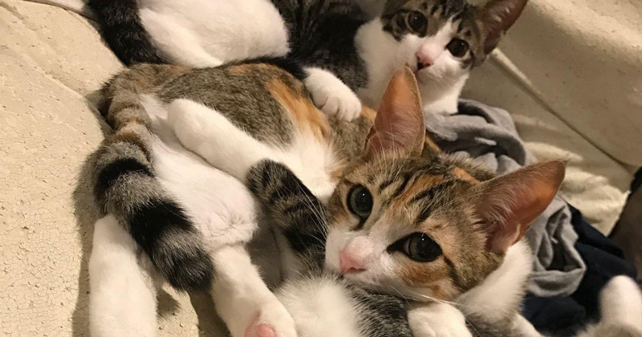
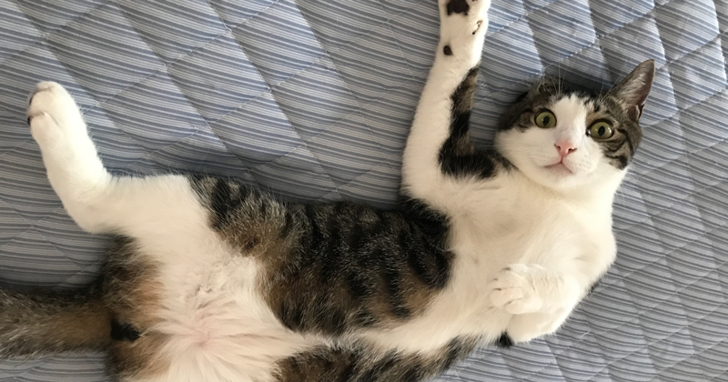
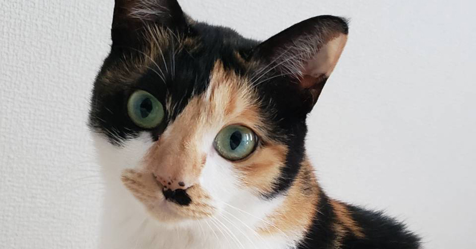

愛犬・愛猫の健康面は飼い主が守る

愛犬・愛猫の健康面は飼い主の意識・知識の向上によって高まります。
我が子達の日々のルーティンや、ご飯の食べ方や好み、食材の相性、ふとした仕草など。
これを1番近くにいて、1番詳しいのは誰でしょうか？
僕たちペットショップの人間でも、獣医や動物病院の人間でもなく飼い主さまなのです。
その飼い主さまに知識や観察力がなければどうでしょうか？
苦しい思いをするのは人間ではなく愛犬・愛猫です。
日々のささいな変化に気付き、行動できる飼い主になりましょう★
健康を考えるための思考を発信

ファヴの顔面と体制はふざけ散らしとりますが内容はマジメですw
犬と猫という動物と過ごしていく中で大事なことを更新していきます★
YouTubeでは話せなかった内容をこちらには追加で記載していこうと思います！
何よりも愛犬・愛猫の幸せな日々のために。
随時更新してまいります

記事の内容が増えてきたら、項目別に分けます！
今はまだ色々ドタバタしているので、飼い主が持つべき思考でまとめますw
レイアウトがまだ修正できていなく見づらいですが、こちらも随時修正してまいります！
飼い主が持つべき思考